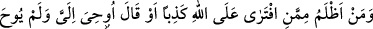
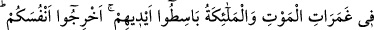
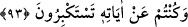

Kur’an okuyan mü’mine yaraşan, tecvîd üzere okumak ve sesini güzelleştirmektir.
Hadisde şöyle buyurulmuştur: “Kur’an’ı teğanni ile (sesini ve okuyuşunu
güzelleştirerek) okumayan bizden değildir. Kur’an’ı sesinizle süsleyiniz. Çünkü güzel
ses, Kur’an’ın güzelliğini artırır.”[135]
Hadisteki “teğannî” den maksat, müstağnî olmaktır denilmiştir. Başka bir görüşe göre
ise “teğannî”, Kur’an okurken nağme yapmak ve sesi hareket ettirmek,
dalgalandırmaktır. Lügat ehline göre bu görüş doğruya daha yakındır. Esrâr-ı
Muhammediye’de böyle denilmiştir.
Zahîruddîn Merginânî’nin şöyle dediği anlatılır: “Bizim zamanımızdaki Kur’an
okuyana (mukri’) kıraatı anında “güzel yaptın” diyenin küfre düştüğüne hükmedilir.”
Tacü’ş-Şerîa’nın Şerhü’l-Hidâye adlı eserinde böyle denilmiştir.
Bezzâziye’de de şöyle denilmiştir: “Kur’an’ı nağmeyle okuyan, onun ecrine
müstehak olamaz. Çünkü o (esas) kârî değildir. Nitekim bir âyet-i celilede şöyle
buyurulmuştur: “Pürüzsüz Arapça bir Kur’an” (ez-Zümer, 39/28)
Bir gün Haccac, meclisinde bulunanlara kendilerine göre en yumuşak (en güzel) sesin
ne olduğunu sordu. Orada bulunanlardan biri şöyle dedi: “Ben, gece yarısı Kur’an’ı
güzel bir nağme ile süsleyip de Allah’ın Kitab’ını okuyanın sesinden daha güzel bir ses
işitmedim.” Haccac: “Bu güzel” dedi. Bir başkası: “Ben, zevcemin doğum sancısı
tuttuğu bir vakitte erkenden mescide gitmişken, bana bir oğlum olduğunu müjdeleyenin
sesinden daha güzelini işitmedim.” dedi. Haccac: “Bu daha da güzelmiş” dedi.
Şu’be b. Alkame et-Temimî dedi ki: “ Hayır, vallahi ben de karnım aç olduğu bir
vakitte, sofra hazırlanırken kaplardan çıkan sesten daha hoş bir ses duymadım.” Bunun
üzerine Haccac: “Ey Temimoğlu, yemeğe düşkün olmaktan başka birşey bilmiyorsun.”
dedi. Bu hikayeden maksat, insanların meşreblerinin farklı farklı olduğunu ortaya
koymaktır.
Kim Allah’ı sever ve O’nun kelâmına ünsiyet eder, bütün maddî beklentilerden uzak
olarak huşû ile Kur’an okur, gereksiz teğannîden ve Kur’an’ı fâsıkların nağmesiyle
terennüm etmekten sakınır da sesini güzelleştirerek onu Arab nağmesiyle okursa artık
zâhiren ve bâtınen onu kötülemeye ve ona karışmaya imkan yoktur. Doğrusunu en iyi
Allah bilir.